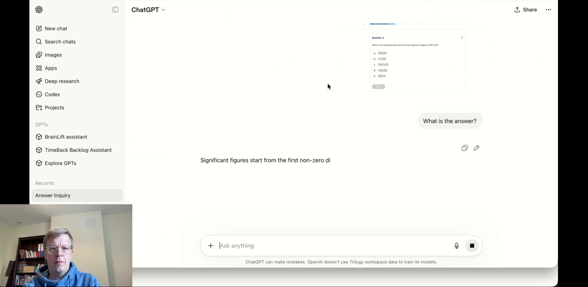

Your Vision ModelPipeline Is Biased
Lessons from shipping real-time video detection
Serban Petrescu · Trilogy / TimeBack · Compass AI 2026
No teacher in the room, and no one watching the test
What we build
- Trilogy's new products division: the software behind Alpha School
- A private US school: digital-first, AI-first, physical and online campuses
- No teachers: adaptive learning apps, and guides in the room
- Progress checked with periodic standardized tests
The problem
- Students alone with devices cheat, idle, and work on the wrong thing
- Official third-party tests kept bringing surprises
- The answer: proctoring software
We detect
- Cheating
- Wasted time
- Self-harm behaviors, raised to a safety officer
One billion students. Zero humans.
- The founder's goal: improve education for 1 billion students in 20 years.
- Humans bootstrap the detectors. Every human left in the loop is one we are working to remove.
- Today, no human reviews a production detection before the student sees it.
2 mo
to real student traffic
140k
hours of video a month
3,400
students, last 30 days
Eighteen months of mistakes. Every one was a bias we put there ourselves.
Three ways students cheat
Unauthorized device use
A handheld device, visibly in use. Judged from the webcam alone.
Help from another person
“The answer is B.”
Another person supplies the answer to the active question.
Unauthorized app use

An external tool used to obtain the answer to the question on screen.
Every flagged behavior has an allowed twin
Device use
Phone in hand
Phone lying on the desk, untouched
Help from another person
“The answer is B.”
“Your screen froze, let me fix it.”
App use
Pastes the question into ChatGPT, submits the answer it gives
A calculator, on a math test that allows one
To the camera, each pair looks nearly identical.
Precision below 0.90 disqualifies a detector
0.90
precision: of what we flag, the share that is real. 0.95 is the goal. The hard gate.
0.90
recall: of what happened, the share we catch. Second priority.
≤2 min
latency, event to warning. Constant, never accumulating.
No single flag ever punishes a student on its own.
We build gold ten seconds at a time
- Every week brought a new model and a new idea. Every demo looked good.
- Picking needs a harness: run every idea against the same sessions, scored the same way.
- Pre-trained or not: a quality claim needs a figure behind it.
We annotate in 10-second blocks to keep it simple. In around 13% of them, humans could not decide on the first pass.
Six annotators, one session, three verdicts on the same ten seconds
The same ten seconds. Opposite verdicts, all with confident reasons:
Serban flagged
“Done fully by the peer. No input from the student.”
Kshama flagged
“An older sibling sits next to the student for the entire test.”
Dule clean
“Three children are present, but nothing contributes to an answer.”
Disagreement was the point: every divergence told us which rule to write.
Attempt 1: a model that only speaks when spoken to
n/a
precision: never measured.
n/a
recall: never measured.
30 s
latency: the nudge cadence, by construction.
Ask a model every 30 seconds whether anything happened, and it will tell you something did.
Attempt 2: stills gave 0.20 recall and a spiralling backlog
0.70
precision: far below the 0.90 gate.
0.20
recall: stills are blind to motion and deaf to audio.
5x
latency: a backlog that compounds all session.
Blind to motion, deaf to audio, and $1,000 per student per month.
Attempt 3: audio doubled recall and hid the precision gap
0.80
precision, on our annotated sessions. So we thought.
0.40
recall: audio and motion doubled it.
2x
latency: still compounding.
We shipped it everywhere, and our own number was wrong by a factor of eight.
“They are drinking from the phone”
90%
of flags reaching human review were false.
8
sessions in five weeks, same behavior, same flag.
HIGH
confidence, on every one of them.
No human would ever say a student is drinking from their phone.
Prompting harder made it worse
Every prompt line fitted the prompt harder to the videos we had handpicked.
Making the pipeline dumber is what raised precision
The vision pipeline, kept dumb
one window, one rule, yes or no
stateless, parallel, replayable
one question per call
Deterministic code
When did the test start and end?
Is a calculator allowed right now?
no model at all
One smart model, at the end
reads all the text, builds the story of the test
reads text only, never sees a frame
after the test, not during
Separating the eyes from the judge cleared the gate
The model that decides never sees a pixel.
The window graph holds 0.95 precision at a constant two minutes
0.95
precision on live traffic, against gold and human review.
0.90
recall, measured the same way.
2 min
from the event to the warning. Constant.
Stateless everywhere, except one place built to remember.
62 models auditioned for one job
Every new model gets a blind check first: what do you see? what do you hear?
Cheaper and better are the same direction
The cheapest system we ever ran is the most accurate one. That is not a coincidence.
Six rules we would follow if we started again
- Build gold before you build anything: annotate to align, and let the disagreements write the rules. Bias 1
- Set the bar before the architecture: precision is a gate, recall a target, latency a constant.
- Keep it simple: no silver bullets, however strong the launch benchmarks looked. Bias 2
- The question shapes the answer: keep rule words away from the eyes, and your own bias out of the dataset. Bias 5
- Make the pipeline dumber: deterministic where code can decide, one binary question where it cannot. Bias 4
- Measure the input before you judge the model: check what it actually receives, and what it perceives. Bias 3 Bias 6
Every mistake was a bias we put there ourselves. That is the good news: so were all the fixes.
Thank you
Questions?
Serban Petrescu · Trilogy / TimeBack · spetrescu.ro